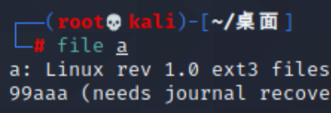
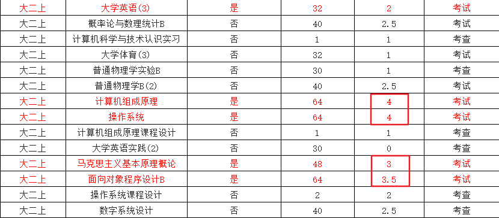
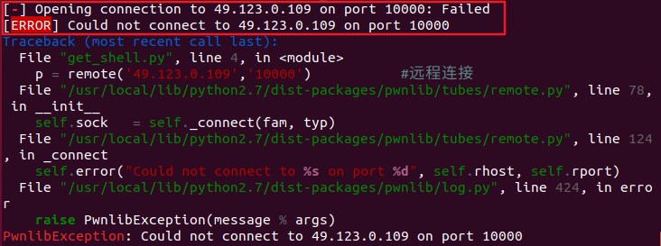

xiaoxiaoNote
Python
代码中存在中文时报错：
1 | SyntaxError: Non-ASCII character '\xe8' in file D:/PyCharmProject/TempConvert.py on line 2, but no encoding declared; see http://python.org/dev/peps/pep-0263/ for details |
原因：注释里面出现了中文，而 Python 支持的 ASCII 码无中文。
解决方法：
1 | # -*- coding: utf-8 -*- |
注意：本行要添加在源代码的第一行
正则表达式
链接：正则表达式 – 语法 | 菜鸟教程 (runoob.com)
PHP
phpstorm
注：不想选择评估免费版本的话，安装好后不要动，先去淘宝买激活码
（很多软件都可以通过淘宝买激活码的方式获取专业版使用权限。白嫖党请自行去寻找资源）
链接（基本教程）：PhpStorm的使用教程（本地运行PHP+远程开发+快捷键） - 知乎 (zhihu.com)
链接（汉化教程）：https://blog.csdn.net/weixin_46397725/article/details/107443128
链接（进阶教程）：https://blog.csdn.net/fangkang7/article/details/112383620
wampserver
链接：wampserver下载安装使用教程_空心人的博客-CSDN博客_wampserver
1、各个课设、eda大作业ppt（emm…老师叫我演讲╭(°A°`)╮）、期末备考
2、重温《程序员的自我修养》（编译链接与库）
（1）了解Linux ELF文件
（2）分析掌握栈溢出原理理解函数参数的传递过程栈空间变化
（3）掌握查找ROPgadget、32位和64位的exp构造
（4）掌握返回导向编程ROP，ret2libc、ret2_dl_resolve
（5）掌握linux系统延迟绑定机制：GOT、PLT查看libc库函数地址
3、计算机网络，计算机组成原理，计算机操作系统（逃不过(°A°`)）
4、至少一周研究一道pwn题
5、姐，还有些问题有空记得教我一下(*σ´∀`)σ
1）、C语言函数调用规定 *
2）、Pwnlib
3）、shellcraft *
4）、打shellcode
2021/11/06
软考终于结束了，晚上去跑5公里庆祝一下^_^（好久没跑了，不知道还跑不跑得动）。至于软考的结果怎样不好说，就算上午的选择题侥幸能及格，下午的大题也很难过吧（毕竟下午的大题我就在上午考完后只用中午休息的时间学了一个小时，虽然效率极高，但毕竟只有一个小时），简而言之那便是——能过就是奇迹。
没事，虽然过不了，但收获还是挺大的，至少我对这网络工程师的考察内容已经有了一个比较清晰的框架，之后的学习中只需要按这个框架逐步地积累知识就可以了。
好了，先不管这软考的事了，丢到寒假再准备吧，下周二就是明月网安招新赛了，这周末挤点时间出来打点攻防世界上的题目吧， ε=(´ο｀*)))唉，作业好多啊，抄都抄不完。
ok，最后把想要做的事记录一下吧，以免忘记，按重要程度排序：
1、ctf招新赛（所以最近我的博客应该都会有题目更新）
2、java期中考试，得抓紧复习
3、装载&见识一下kali Linux操作系统（不得不说，这红色的字确实帅）

4、期末备考（及格万岁！）

5、学习网络工程师相关知识，通过这段时间对网络工程师的备考来看，不得不说这些知识对我来说是很有用的。
6、英语六级（寒假再看吧）
2021/11/09
简单记录一下今天下午的比赛吧：
接下来记录的东西，我自己看得懂就行吧
1、windows管理员权限，修改系统文件
2、跟舍友组队打新手赛，2:1开，理论题做不了，打的都是实践题
3、网络弄崩心态：校园网一直断，不连校园网无法提交flag查看是否正确，只能一会儿热点一会儿校园网，且校园网连的比较慢，比赛场地位置不太好吧，校园网信号差
4、简单pwn题没调出来：好像远端服务器连不上去，不说太多，留个图吧

5、emm…
6、最后跟舍友一起打了300分，不知道能不能排上号，但愿能进校CTF队吧